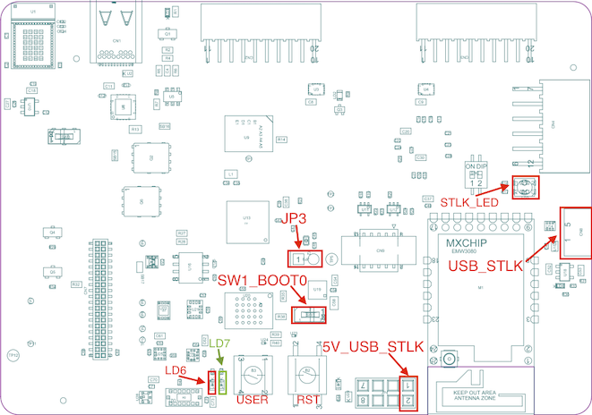
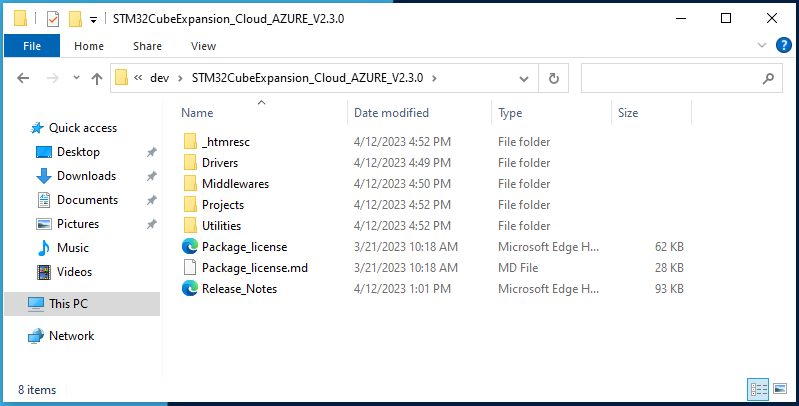
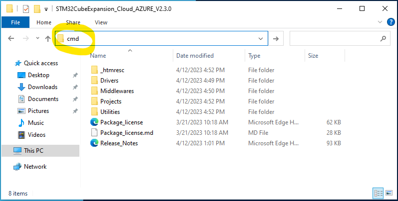
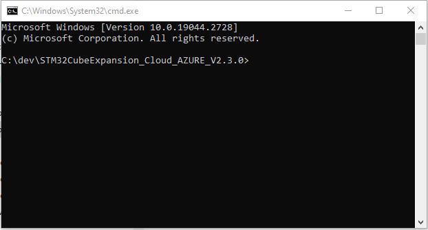
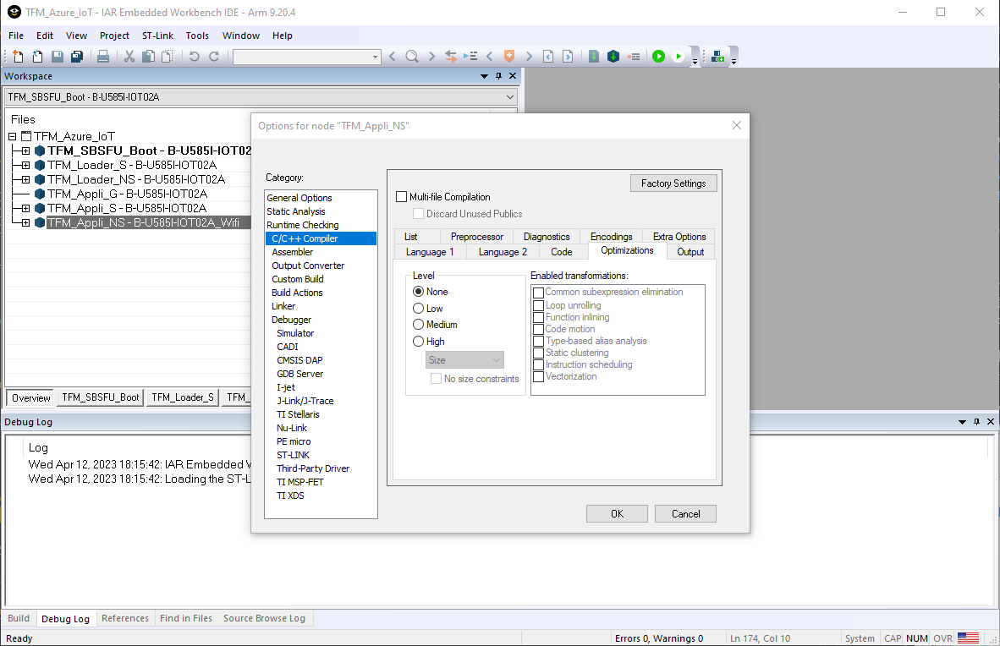
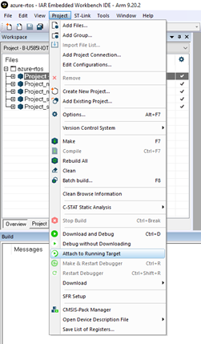
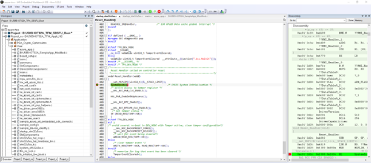

The USB STLK port is located to the right of the MXCHIP WiFi module in the figure. It is used for power supply, programming, debugging, and interacting with the application via UART over USB.
EWARM has a path length limitation that requires to use a
subst drive directory.
1. Navigate to the directory where you have installed the X-Cube-Azure
package.



subst z: .Use any unused drive letter instead of z: if necessary.
This will create a new drive letter referencing directly this directory,
thus shortening the path length.
To un-substs this drive, use the following command:
subst z: /d
The workspace contains several projects required by the
application
>TFM_Azure_IoT
>- TFM_SBSFU_Boot : Secure Bootloader based on the
TFM implementation.
>- TFM_Loader_S : Secure part of the Loader
application.
>- TFM_Loader_NS : A special application to upload
new TFM_Appli (secure and non-secure) via the serial port
(Y-Modem).
>- TFM_Appli_G : Special project to generate Secure
API source files based on selected TFM partitions.
>- TFM_Appli_S : Secure API for the NonSecure
application
>- TFM_Appli_NS : The Actual Azure IoT
application
The TFM_Appli_NS provides 3 build configurations to choose from:

To build the entire workspace, press F8 to open the
Batch build dialog window:

Select the desired build type, then click the Make
button.
The IDE will then build the entire workspace and generate the
appropriate binaries to flash your board.
> This process may take some time the first time it is executed.
Automated script to configure your Azure environment, provision your board and flash the firmware are provided in the AzureScripts directory.
Please refer to one of the azure cloud connection methods :
To flash the firmware :
- connect your board via USB

Projects\B-U585I-IOT02A\Applications\TFM_Azure_IoT\TFM_SBSFU_Boot\EWARMTFM_UPDATE.batThe application output can be monitored thru the serial port.


Right click on TFM_Appli_NS in the IAR workspace and select ‘Options…’
Under ‘C/C++ Compiler’ and ‘Optimization’ set Level to ‘None’

Do the same for Project_ns-B-U585I-IOT02A_TFM_Loader_S
Build the project
Right click on TFM_SBSFU_Boot project in the IAR workspace and select it as the active project
Right click on TFM_SBSFU_Boot project in the IAR workspace and select ‘Options’
Under ‘Debugger’ -> ‘Setup’

Under ‘Debugger’ -> ‘Images’

Projects\B-U585I-IOT02A\Applications\TFM_Azure_IoT\TFM_Appli\EWARM\Secure\B-U585I-IOT02A\Exe\B-U585I-IOT02A.out
as first path.Projects\B-U585I-IOT02A\Applications\TFM_Azure_IoT\TFM_Appli\EWARM\NonSecure\B-U585I-IOT02A\Exe\B-U585I-IOT02A.out
as second path.Flash the Firmware
Set desired breakpoints in IAR EWARM
After the Firmware Image is Built and Flashed to the board. Click ‘Project’ in the taskbar and select ‘Attach to Running Target’

Press the black ‘RST’ Button on the board to reset and view the debugger in IAR EWARM
